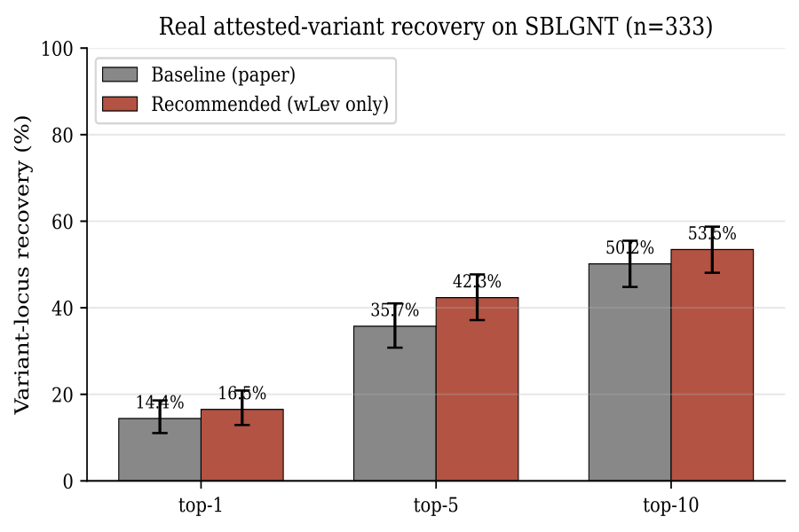

Ancient Greek texts reach us through centuries of hand-copying. Letters smudge, words drop out, scribes mishear or misread. Princeton’s Logion is a language model (a BERT trained on premodern Greek) that reads a passage and flags spots where the transmitted word looks wrong, then proposes the word it thinks should be there. Editors use it as a second set of eyes.
How it decides something looks off
For each word, Logion computes a chance-correction ratio: how likely is the word that’s actually written, compared to the most likely near-spelling the model can imagine in its place? When a different spelling is far more probable in context, that word gets surfaced for an expert to look at.
To build that set of “near-spellings,” Logion needs a notion of which words count as close. It uses edit distance (Levenshtein) — how many single-character changes turn one word into another.
The problem: every swap costs the same
Plain edit distance is blunt. Changing one letter to any other letter costs exactly one, whether the two letters are constantly confused or have nothing to do with each other. Logion’s original filter is even blunter: it’s a yes/no gate — any vocabulary word within distance 1 is let in, all treated equally.
That isn’t how copying errors happen. In Byzantine Greek a handful of confusions cause most of the mistakes:
- Itacism — η, ι, υ, ει, οι all came to be pronounced the same (/i/), so scribes writing from dictation swapped them constantly.
- Visual look-alikes in minuscule script — γ/τ, λ/μ, β/ν, ρ/π are easy to misread.
- Post-vocalic β/υ — a sound shift that bled into spelling.
A metric that treats η→ι the same as η→ξ is throwing away exactly the signal that matters.
The change: make the swaps weighted
Instead of a yes/no gate, give each substitution a cost drawn from documented confusion classes (Allen’s Vox Graeca, West’s Textual Criticism, Reynolds & Wilson’s Scribes & Scholars). Easily-confused letters cost little; unrelated ones cost the full amount. The filter becomes a smooth weight rather than a hard cutoff.
An itacism swap like ταις / τοις costs 0.35 and gets about 3.7× the weight of an unrelated same-distance edit like τις / οις, which costs the full 1.00.
The result
Tested against real attested variants — 333 spots in the SBLGNT apparatus where the manuscripts genuinely disagree — the weighted filter recovers more of them. This is the fairest test, because it uses errors that real scribes actually made rather than artificial ones.
Paired McNemar test, p < 10−3. The weighted filter recovered 28 loci the baseline missed and lost only 6. Top-1 trends positive but isn’t significant (16.5% vs. 14.4%, p=0.30).

The same direction shows up in two more controlled tests. On the paper’s synthetic protocol (n=200), removing the weighted filter costs −4.0pp at top-1 (one-tailed McNemar p=0.029). On a corruption protocol built to mimic scribal-class errors, removing it costs −4.0pp at top-10 (p=0.039).
What helped, what didn’t
Two other changes were tried alongside the weighted distance. Both turned out to be dead weight, and the all-on combination actually does worse than baseline (−1.5pp top-1, −3.5pp top-5).
| Condition | Top-1 | Top-5 | Top-10 | McNemar p |
|---|---|---|---|---|
| Baseline (paper) | 37.5% | 69.5% | 81.5% | — |
| −CF temperature | 37.5% | 69.0% | 80.0% | 1.00 |
| −Weighted Lev | 33.5% | 67.5% | 80.5% | 0.057 |
| −Extras (E1–E4) | 37.0% | 68.0% | 81.5% | 1.00 |
| All improvements | 36.0% | 66.0% | 79.0% | 0.63 |
- A chance-fit adaptive temperature (flatten the model’s distribution when the written word is implausible) is inert — an exact tie with baseline at top-1, McNemar p=1.00.
- Four “extras” (E1–E4) are actively harmful on the realistic protocol: removing them lifts top-1 from 26.5% to 30.5% (p=0.021). The likely culprit is the lectio difficilior penalty (E1), which discounts suggestions more common than the written word — exactly the pattern when an itacism slip moves a rare spelling to a common one.
So the configuration that wins is the simple one: weighted Levenshtein on, everything else off.
Running it on Photius
The system was then turned loose on 26 paragraphs (~2,100 words) of Photius’s Bibliotheca (codices 70, 92, 161, 165, 213) — a text outside Logion’s training corpus, surviving in two manuscript families (Marcianus gr. 450 and 451). Its shortlist clusters in the itacism and visual-confusion region, as you’d hope, but none of its picks line up with documented apparatus loci. Best read as the spots where the model and the transmitted text most disagree, not a curated set of fixes.
Caveats
- Domain shift. The public Logion checkpoint is fine-tuned on Psellus (11th c. Byzantine). The variant test uses Koine (1st c.) and the Photius run is 9th c., so absolute accuracy sits below the paper’s in-domain 90.5%. The relative deltas — baseline vs. weighted on the same loci — still hold.
- The synthetic protocol is rigged against weighting. It draws corruptions uniformly across the 24-letter alphabet, which quietly rewards an algorithm that treats every edit as equally likely. The whole point of weighting is to exploit the non-uniform reality of scribal error, so the real-variant test is the one that counts.
- A variant isn’t always an error. Many SBLGNT variants are disagreements between defensible readings, not slips. The test measures whether Logion finds a locus unusual, which is weaker than asking whether it’s wrong.
- The weights are hand-tuned from textbooks. The obvious next step: learn the phonetic prior from Byzantine palaeographic data, or retrain the model with the weighted neighborhood as a training signal rather than just an inference-time filter — that could internalize scribal error patterns directly and yield a larger gain.